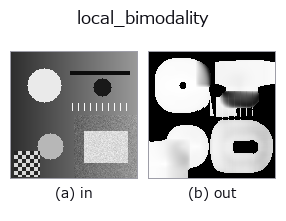

texture op• データ種: image → image
• 呼び出し: fullseye.apply(img, "local_bimodality", a=0.5, b=0.5) (2-D は 1 画像 + 2 スカラつまみ a,b∈[0,1] のモデル)

*図は合成の入力 128×128 で実際に走らせた出力。左が入力、右が出力。点群は上から見た散布(明るさ = z)、1-D 列は折れ線、体積は z 方向の最大値投影、動画は中央フレーム、複素画像は振幅、絵にならない返り値は値そのもの。*
つまみ a を振る(0.1 / 0.5 / 0.9、もう一方は既定):
▸ local_bimodality: knob a sweep (docs site)
つまみ b を振る(0.1 / 0.5 / 0.9、もう一方は既定):
▸ local_bimodality: knob b sweep (docs site)
別の画像でも(合成シーン / 写真 / 硬貨。上段が入力、下段がその出力。つまみは既定):
▸ local_bimodality: other inputs (docs site)
*4 列目はカラー (H,W,3) の入力。この op は色を跨がずに扱える(色チャネルを 3 本目の空間軸として畳み込まない)。*
局所の二峰性(bimodality coefficient)。閾値を 1 つも選ばずに「ここは 2 つの
値に分かれているか」だけを 0〜1 の地図で返す。
`a が窓の一辺を 9, 15, 25, 41` に振る(大きいほど推定は安定するが、細い構造は
周りに溶ける)。`b が**コントラストの床**を max(1e-5, 0.25b x 画像の値域)` に
振る ―― 窓の標準偏差がこれ未満なら 0 を返す(b=0 でも 1e-5 の絶対床は残る)。
`BC = (歪度^2 + 1) / 尖度` で、窓の 1〜4 次モーメント(箱型平均 4 回)だけから
閉形式に出る。平行移動にもスケールにも不変なので、薄い模様でも濃い模様でも
同じ値になる。参照値は解析解で決まっていて、実測もそこへ収束する(窓 41):
• 2 点分布(半々の 2 値)= 1.0(尖度 1 が下限)―― 段差の真上で実測 1.0000
• 一様分布 = 5/9 = 0.5556 ―― 一様乱数で実測 0.5598
• 正規分布 = 1/3 = 0.3333 ―― 正規乱数で実測 0.3306
`> 5/9` が「一様より尖った 2 山」の古典的な目安。★一峰でも 0 にはならない
―― 正規分布の床は 1/3 であって 0 ではないので、使えるのは 0.33〜1.0 の帯である。
出典と、引き継いでいる限界(Pfister, Schwarz, Janczyk, Dale & Freeman 2013,
*Frontiers in Psychology* 4:700)。★歪んだ単峰分布が偽陽性を出す: 論文の図では
明らかに単峰の分布が BC = 0.73、本当に二峰の分布が BC = 0.67 で、順位が
逆転している。歪度が絶対値で大きいほど、山の数と無関係に BC が上がるため。
この op も同じ性質を持つ —— 片側に尾を引く窓(暗い地に明るい点が少しだけ、など)は
高く出る。二峰性の判定を 1 本で決めず、`local_std や otsu` の分離度と併せること。
なお論文の式は標本補正つき `(m3^2+1)/(m4 + 3(n-1)^2/((n-2)(n-3)))` で、この op は
母集団版を使う(窓は 81〜1,681 標本あり補正は無視できる。上の参照値 1/3・5/9・1.0 は
母集団版で厳密に成り立つ)。
閾値を選ぶ側の一般化との関係: Barron (2020) の Generalized Histogram Thresholding
(arXiv:2007.07350)は Otsu・Minimum Error Thresholding・重み付きパーセンタイル閾値を
特殊ケースとして包含し、どの閾値にするかを連続に補間する。この op は対になる側で、
そもそも閾値が在るかを測る。
**なぜ閾値を選ぶ op(`otsu / threshold`)の前に要るか**: 二値化はどんな画像
でも答えを返すが、山が 1 つしか無い窓では意味の無い位置で切る(`otsu` の
docstring が自ら認めている限界)。この op は切る前に「そもそも分かれるのか」を
返すので、「分かれない場所は切らない」と決められる。文字のマスが 1 色の地に 1 色の
字か、板が均一に照っているか、傷が本当に地と別の階調かの判定に使う。
★床は必須。一様な面では分散が丸め屑になり、屑どうしの 3 次・4 次の比が構造に
化ける ―― 床を画像の値域に対する相対量だけで置いた版は、0.5 一色に振幅 1e-12〜1e-8
の屑を乗せただけの画像で BC の最大が 1.0000 になった(値域そのものが屑なので
相対床が効かない)。絶対床 1e-5 を併せて初めて 0 に落ちる(実測)。
正規化しない(値は BC そのもの)ので、画像間で比較できる。縁は反射
(`mode="reflect"`)。空フレームは全 0。★窓が広いのでタイル分割してはいけない
(`scale.py` に理由つきで登録済み)。
• gallery2d_texture_freq ファミリ ガイド
• サンプルデータ カタログ(DL URL / ライセンス) — 2-D は skimage.data(BSD/public)+ 合成、3-D は実データ源(Stanford/PDS 等)の DL URL。
• 演算子の来歴・参考文献 — この op 族の元になった研究/手法の出典。
• アルゴリズムの正典(著者・年)と用途は上記ファミリ使い方ガイドに記載。
下のプログラムは実際に走ることを確かめてある(図と同じ入力)。Studio のヘルプではこのブロックがボタンになり、その場で読み込んで実行できる。
local_bimodality 0.50 0.50
▸ Load this pipeline · Load & run
• gallery2d_texture_freq — py -3.11 examples/gallery2d_texture_freq.py
image を入力に取れる)identity · gaussian · mean_box · bilateral · unsharp · median · min_filter · max_filter
texture)std_filter · local_std · scale_select_std · bootstrap_std_error · structure_tensor_orientation · structure_tensor_coherence · gabor · sk_frangi
*Provenance: ops.py — 2D operator registry. この per-op ノートは tools/opdocs.py md が自動生成(手編集しない)。*
© 2026 Kazufumi Furuse — Fullseye operator documentation. Licensed under Apache-2.0.
{kind=link}
{kind=link}
{kind=link}